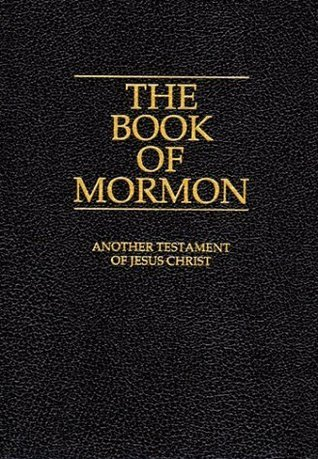

"The Book of Mormon: Another Testament of Jesus Christ"
- Read on 2019-05-07
- Rating: ️️️️️
- Format: 🎧 (28 hours 51 minutes)
Other books relay events better. Other books have more interesting people, or more inspiring events. But, no other book I've found has better material to help guide me in my life, and answer my questions. This time through, I approached it as any other audio book. I still found value this way, but I've found that a careful study of the book provides me more personal benefit. This book is real. This book is true.
- Prior: In Harm's Way
- Next: I'm From the Sun